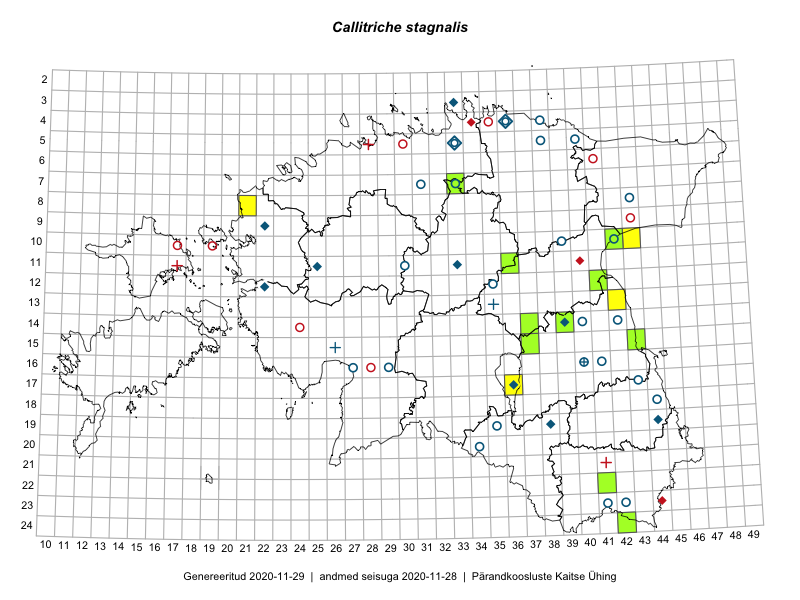

Callitriche stagnalis — tiik-vesitäht
Plantaginaceae :: Callitriche stagnalis Scop. (64)

Kaart põhineb 64 kirjel:
vaatlusi 6
herbaareksemplare 58
Taime kaasaegsed ja ajaloolised leiukohad asuvad 43 ruudus.
Tingmärgid ja ruutude arvud periooditi (U1 / V2 )
█ 2006–2020 (13/–)
◆/◇ 1971–2005 (11/12)
○ 1921–1970 (24/25)
+ kuni 1920 (2/3)
× hävinud (–/0)
? kaheldav (–/0)
| Ruut | Leidja(d) | Leiuaeg | Kirje |
|---|---|---|---|
| 16-40 | Glehn | 1860–1938 | ruut/ala: Callitriche stagnalis Scop. |
| 08-21 | Helle Mäemets, Kadi Palmik | 2017-07-15 | ruut/ala: Callitriche stagnalis Scop. |
| 10-43 | Helle Mäemets | 2014-07-21 | ruut/ala: Callitriche stagnalis Scop. |
| 15-37 | Helle Mäemets | 2015-07-07 | ruut/ala: Callitriche stagnalis Scop. |
| 17-36 | Helle Mäemets | 2017-08-29 | ruut/ala: Callitriche stagnalis Scop. |
| 13-42 | Helle Mäemets | 2015-07-28 | ruut/ala: Callitriche stagnalis Scop. |
| 17-36 | Helle Mäemets | 2001-06 | TAA0032671: Callitriche stagnalis Scop. |
| 11-25 | Thea Kull | 2000-06-25 | TAA0032672: Callitriche stagnalis Scop. |
| 12-35 | Maret Kask | 1966-06-17 | TAA0032673: Callitriche stagnalis Scop. |
| 12-35 | Maret Kask | 1966-06-17 | TAA0032674: Callitriche stagnalis Scop. |
| 12-35 | Maret Kask | 1966-06-17 | TAA0032675: Callitriche stagnalis Scop. |
| 23-42 | Vilma Kuusk, Haide-Ene Rebassoo | 1957-08-02 | TAA0032677: Callitriche stagnalis Scop. |
| 05-40 | Agnes Ojaveer, Ella Tammemägi | 1961-06-23 | TAA0032678: Callitriche stagnalis Scop. |
| 04-38 | Maret Kask | 1963-06-17 | TAA0032679: Callitriche stagnalis Scop. |
| 20-34 | Taisi Belajeva | 1959-06-09 | TAA0032680: Callitriche stagnalis Scop. |
| 12-22 | Liivia Laasimer | 1977-08-16 | TAA0032681: Callitriche stagnalis Scop. |
| 11-33 | T. Trei | 1989-07-10 | TAA0032682: Callitriche stagnalis Scop. |
| 04-36 | Liivia Laasimer | 1963-07-25 | TAA0032683: Callitriche stagnalis Scop. |
| 04-36 | Liivia Laasimer | 1963-07-25 | TAA0032684: Callitriche stagnalis Scop. |
| 16-41 | Agnes Ojaveer | 1964-07-23 | TAA0032685: Callitriche stagnalis Scop. |
| 10-39 | Kaljo Pork | 1961-08-29 | TAA0032686: Callitriche stagnalis Scop. |
| 05-33 | Maret Kask | 1958-06-29 | TAA0032687: Callitriche stagnalis Scop. |
| 16-29 | Silvia Talts | 1958-07-19 | TAA0032688: Callitriche stagnalis Scop. |
| 09-22 | Tiina Ksenofontova | 1981-07-06 | TAA0032689: Callitriche stagnalis Scop. |
| 16-40 | Liivia Laasimer | 1965-08-22 | TAA0032690: Callitriche stagnalis Scop. |
| 16-40 | Liivia Laasimer | 1965-08-22 | TAA0032691: Callitriche stagnalis Scop. |
| 17-43 | Gustav Vilbaste | 1929-07-29 | TAA0032692: Callitriche stagnalis Scop. |
| 04-36 | Gustav Vilbaste | 1927-08-02 | TAA0032693: Callitriche stagnalis Scop. |
| 07-31 | Maret Kask | 1958-07-06 | TAA0032695: Callitriche stagnalis Scop. |
| 07-33 | Haide-Ene Rebassoo | 1966-07-21 | TAA0032696: Callitriche stagnalis Scop. |
| 04-36 | Maret Kask | 1975-08-12 | TAA0032697: Callitriche stagnalis Scop. |
| 23-41 | Tiiu Nurmiste | 1957-08-01 | TAA0032698: Callitriche stagnalis Scop. |
| 19-35 | Maret Kask | 1959-08-14 | TAA0032699: Callitriche stagnalis Scop. |
| 05-33 | Liivia Laasimer | 1982-07-19 | TAA0032700: Callitriche stagnalis Scop. |
| 18-44 | Salme Kask | 1957-06-30 | TAA0032701: Callitriche stagnalis Scop. |
| 03-33 | Maret Kask | 1974-07-27 | TAA0032702: Callitriche stagnalis Scop. |
| 10-42 | Agnes Ojaveer, Visolde Puusepp | 1963-07-02 | TAA0032703: Callitriche stagnalis Scop. |
| 14-39 | Toomas Kukk | 2004-09-26 | TAA0032704: Callitriche stagnalis Scop. |
| 14-39 | Toomas Kukk | 2004-09-26 | TAA0032705: Callitriche stagnalis Scop. |
| 14-39 | Toomas Kukk | 2004-09-26 | TAA0032706: Callitriche stagnalis Scop. |
| 14-39 | Toomas Kukk | 2004-09-26 | TAA0032707: Callitriche stagnalis Scop. |
| 14-39 | Toomas Kukk | 2004-09-26 | TAA0032708: Callitriche stagnalis Scop. |
| 14-39 | Toomas Kukk | 2004-09-26 | TAA0032709: Callitriche stagnalis Scop. |
| 14-42 | Linda Viljasoo | 1967-06-14 | TAA0032710: Callitriche stagnalis Scop. |
| 16-27 | Vilma Kuusk | 1967-08-08 | TAA0032711: Callitriche stagnalis Scop. |
| 14-40 | Linda Viljasoo | 1967-06-08 | TAA0032712: Callitriche stagnalis Scop. |
| 05-38 | Vilma Kuusk | 1963-06-11 | TAA0032713: Callitriche stagnalis Scop. |
| 04-36 | Maret Kask, Linda Viljasoo | 1963-06-20 | TAA0032714: Callitriche stagnalis Scop. |
| 08-43 | Agnes Ojaveer, Visolde Puusepp | 1963-06-26 | TAA0032715: Callitriche stagnalis Scop. |
| 11-30 | Hugo Salasoo | 1937-08-08 | TAM0002756: Callitriche stagnalis Scop. |
| 14-39 | Peedu Saar | 2017-07-26 | TAA0141012: Callitriche stagnalis Scop. |
| 14-37 | Indrek Tammekänd | 2017-08-18 | TAA0143742: Callitriche stagnalis Scop. |
| 19-44 | Aime Mäemets | 1974-07-11 | TAA2000623: Callitriche stagnalis Scop. |
| 15-37 | Ott Luuk | 2017-08-14 | TAA0142795: Callitriche stagnalis Scop. |
| 15-37 | Meeli Mesipuu | 2017-06-21 | TAA0145085: Callitriche stagnalis Scop. |
| 15-43 | Peedu Saar | 2018-07-20 | TAA0146885: Callitriche stagnalis Scop. |
| 19-38 | Ingmar Ott | 2004-03-02 | TAA2002644: Callitriche stagnalis Scop. |
| 10-42 | Helle Mäemets | 2006-09-21 | TAA2002967: Callitriche stagnalis Scop. |
| 11-36 | Peedu Saar | 2019-08-10 | TAA0149546: Callitriche stagnalis Scop. |
| 24-42 | Peedu Saar, Toomas Kukk | 2019-07-31 | TAA0149549: Callitriche stagnalis Scop. |
| 12-41 | Peedu Saar | 2019-07-30 | TAA0149552: Callitriche stagnalis Scop. |
| 07-33 | Ott Luuk, Jaak-Albert Metsoja | 2019-08-08 | TAA0150373: Callitriche stagnalis Scop. |
| 07-33 | Ott Luuk, Jaak-Albert Metsoja | 2019-08-08 | TAA0150374: Callitriche stagnalis Scop. |
| 13-35 | J. Treboux | 1859 | TAM0059610: Callitriche stagnalis Scop. |
Ruutude arv uue atlase andmekogu järgi. Muuhulgas arvestab vanemat herbaariumi, 2005. aasta atlase välitöölehtedelt uuesti digitaliseeritud andmeid jne. Uue atlase andmekogust pärinevad andmed on kaardile kantud siniste sümbolitega.↩︎
Ruutude arv 2005. aasta atlase (Kukk, T., Kull, T., Eesti taimede levikuatlas. Eesti Maaülikool, Põllumajandus- ja Keskkonnainstituut, Tartu, 2005) järgi. Andmeallikana on kasutatud levik.exe programmi, kus igas ruudus on registreeritud vaid uusim leid. Seetõttu on vanemate perioodide kohta andmed puudulikud. Kasutatud levik.exe andmestikus leidub mõningaid kõrvalekaldeid atlase trükis ilmunud versioonist, sagedamini tarnade ja käpaliste seas. Lisaks leidub selles andmestikus valik liike (peamiselt väheste leidudega tulnuktaimed), mille kaarte trükis ei avaldatud. Vana atlase andmed ruutudest, milles ei ole uue atlase andmekogus leide enne 2006. aastat, on kaardil esitatud punaste sümbolitega. Vana atlase andmetel hävinud ja kaheldavaid leiukohti pole hilisemate (taas)leidude põhjal korrigeeritud.↩︎